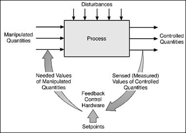
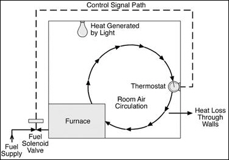
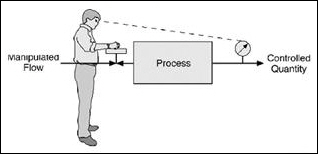
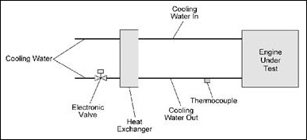
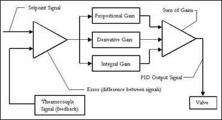
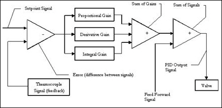
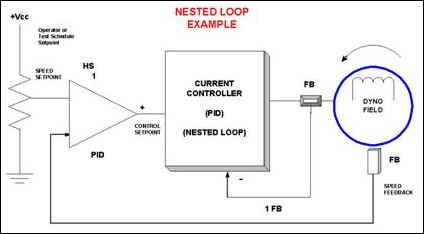
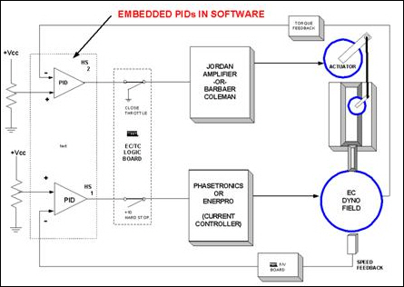

iTest User's Guide
A PID loop is comprised of a feedback signal, a setpoint signal, and a control signal.
PID Loop

By measuring and comparing the resulting feedback to the desired setpoint, an error is derived. With feedback, or closed loop, control, the system does not need to know in advance exactly what disturbances will affect the process. In addition, the system does not need to know specific quantitative relationships between these disturbances and their ultimate effects on the controlled variables.
In a simple control system, as shown in the following figure, the setpoint is entered by the thermostat. So the thermostat develops an error internally. The effects of that error can be seen as a control output that actuates the fuel solenoid bringing the system into control.
Simple Control System

This is an example of a closed loop system. Error is derived from the difference in room temperature and setpoint
The following figure depicts a manual method used for dyno control.
Manual Method for Dyno Control

The operator in this figure derives the error by comparing the setpoint to the feedback and implements control with the hand valve. The problem with this system is lack of repeatability and limits of control speed, not to mention operator fatigue, boredom, and more.
Closed loop technologies eliminate the problems associated with human control of a dyno. Dyno controllers using setpoint and feedback develop an error. The error is processed through the three-mode controller and becomes the control signal. The three-mode controller is the device that implements a PID control function in a process controller such as a dyno control.
After gaining an understanding of PID controls, it is possible to tune the controls for each application so that response is optimized. For example, a control loop can maintain the temperature of a tank of water at a set temperature.
A PID control has three major control variables that are set to define how the PID operates:
Variables
| Variable | Description |
| Proportional control | Monitors only the magnitude of the error (the difference between the feedback and the setpoint signal) and applies a proportional amount of that error to the control signal. Increasing the proportional band gain increases the responsiveness of the system, but may cause severe oscillations about the setpoint. The process load is the variable that causes the error (for example, cold air that cools down a tank that is being maintained at a fixed temperature). Using only proportional control, you can adjust the proportional gain to work with fixed process loads. If the process load varies substantially, adding integral and derivative controls helps reduce the error. |
| Integral control | Monitors cumulative error over time. If the setpoint is not reached, a gain is introduced so that the setpoint can be reached. The variable for integral controls defines how often the gain is reset to account for the error. A bigger integral gain responds more quickly to a varying process load, but severe oscillations about the setpoint may occur. |
| Derivative control | Monitors the change in error with respect to time. A constant error initiates no response from the derivative portion of the controller, while a rapid rate of error change produces a greater response from the derivative portion of the controller. For example, the derivative portion of a controller could reverse the sign and increase the magnitude of the gain if the process error is small and the rate of error change is high to minimize or eliminate the overshoot of a setpoint. |
The following example illustrates the use of PID control for engine processes. The requirement is to stabilize the temperature of engine coolant. A heat exchanger acts as a vehicle radiator.
PID Control for Engine Processes

In this example, an electronic valve controls the flow of water to the heat exchanger and opens proportionally to the control signal.
A thermocouple monitors the engine’s water temperature. The control and feedback signals, along with a setpoint signal from the user (or system), control the engine’s coolant temperature.
A controller is required to define the scale, rate, and magnitude of the heat exchangers output ability to remove heat (deg/gal/min).
The following figure shows a schematic of the PID control system. The difference (error) between the setpoint signal and feedback signal is calculated. From this error, the proportional gain, derivative gain, and integral gain are calculated. The sum of the gains is calculated and an output signal is sent to the control valve. The results are monitored by the thermocouple and this process repeats.
PID Control System Schematic

An additional option for a PID control is shown in the following figure. With this type of system, an additional gain can be used if it is determined that another parameter has a predictable effect on the system. With the engine example, the existence of an additional coolant load, such as a dynamometer, may affect the response of the PID. A gain could be introduced to control the coolant temperature that is proportional to the load applied by the dynamometer.
Additional Gain

In the following figure, a dynamometer applies a load to the engine to achieve a desired speed. Dyno load is controlled by a current controller (inner PID loop) while the speed sensor provides feedback to the outer PID loop.
Nested Loop

In this example, the analog output (control) channel of the outer PID loop is also the setpoint to the current controller that allows current to the dyno field proportionally to the commanded control signal (typically 0-10 vdc).
A speed feedback pickup (rpm; frequency/voltage input) monitors the dyno shaft’s speed. The engine’s speed is maintained based on parameter definitions of the command and feedback signals.
One (PID) controller is required to define the scale, rate, and magnitude of the final field current output (Amps).
To illustrate the use of PID control of a dynamometer and engine using advanced software control features, refer to the following figure.
Embedded PIDs in Software

In this example, two analog database channels are driven. One channel drives the current to the throttle actuator field proportionally to the control signal setpoint (typically 0-10 vdc). Another channel drives the current to the Dyno field (0-10 vdc).
Speed and torque feedback sensors monitor the dyno. These two signals, along with setpoint signals from the user (or system), provide stable control of an engine’s load at a given speed.
Two PIDs are active in the definition scale, rate, and magnitude of the dyno field and the throttle field output current. Each PID is embedded in software designed to control their respective loops. Typical software control modes are Speed Mode and Load Mode.